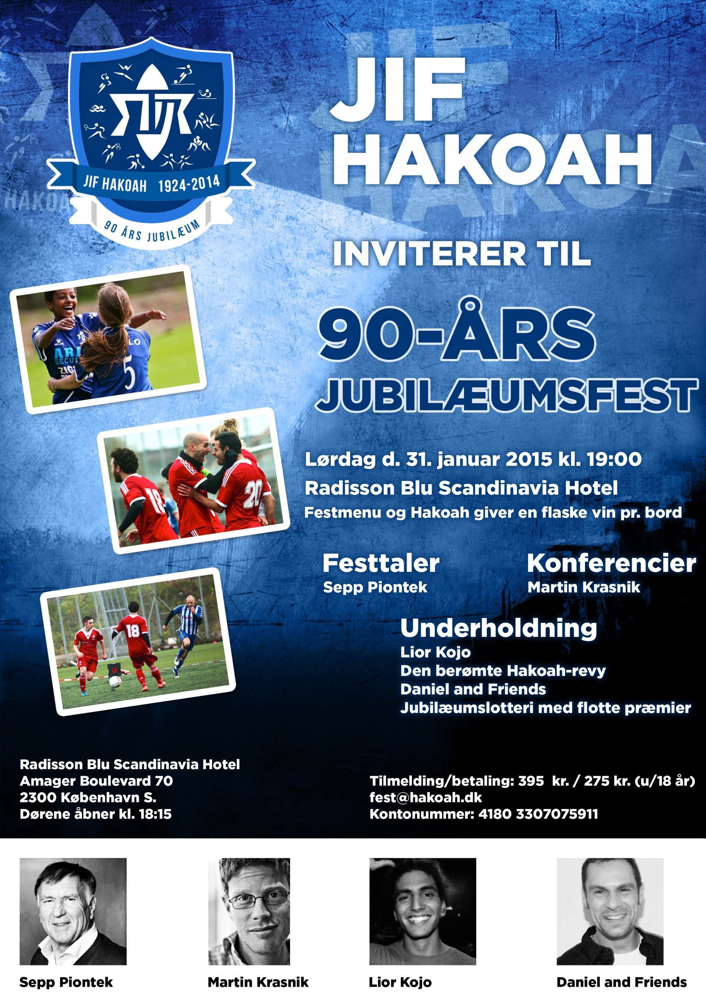

Klubben
Kontingent
Hvordan bliver du medlem
Vedtægter
Bestyrelsen
Links
Kontakt
Kontakt
Jubilæum
Klubbens historie
Formænd gennem tiderne
1924 - 1934 og 1949 - 1951
1934-1935
1935-1937
1937-1942
1942-1946
1946-1949
1951-1959
1959-1961
1961-1967 og 1969-1971
1967-1969
1971-1973
1973-1975 og 1977-1978
1975-1977
1978-1985
1985-1991
1991-2009
2009-
Æresmedlemmer
1940erne
1950erne
1960erne
1970erne
1980erne
1990erne
2000erne
Æresnål
Guld
Sølv
Bronze
Dengang var der brydere til
To stovte støtter
Internationalt samarbejde gennem mere end 70 år
Noget af hakoahs historiske fortid
Lidt om bordtennisafdelingen
Hakoahs skytsengel - Poul Abrahamsen
hakoahneren
Hakoahneren gennem årene
Jubilæumsblad
2014
2013
2012
2011
2010
2009
2008
2007
2006
2005
2004
2001
1999
2000
1943
1942
senior
1. senior hold
2. senior hold
7M-senior
Superveteraner
Bordtennis
ungdom
U/15-piger
u/13-drenge
u/12-piger
u/9-drenge/piger
u/7-drenge/piger
u/6-drenge/piger
maccabiade
2015 - Berlin
2013 - Israel
2011 - Wien
2009 - Israel
2007 - Rom
2005 - Israel
2003 - Antwerpen
2001 - Israel
1999 - Glasgow
1997 - Israel
1995 - Amsterdam
1993 - Israel
1991 - Marseille
1989 - Israel
1987 - København
1985 - Israel
1983 - Antwerpen
1981 - Israel
1979 - Leicester
1977 - Israel
1974 - København
1973 - Israel
1969 - Israel
1965 - Israel
1961 - Israel
1959 - København
1957 - Israel
1953 - Israel
1950 - Israel
1935 - Britisk Mandat Palæstina
1932 - Britisk Mandat Palæstina
pgt
2014 - Gøteborg
Guld til B00/01
Sølv til B02/03
Sølv til Girls02/03
Bronze til Girls98
Bronze til B99
Bronze til B06
2013 - København
PGT13 Boys01
PGT13 Boys99
PGT13 Girls99
PGT13 Mixed05
2012 - Helsinki
2011 - Stockholm
2010 - Gøteborg
2009 - Oslo
2008 - Stockholm
2007 - København
2006 - Helsinki
2005 - Oslo
2004 - Gøteborg
2003 - København
2002 - Stockholm
Galleri
